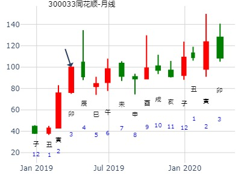
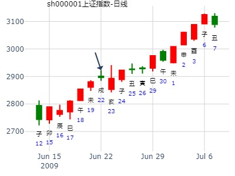

出生年：年 性别：男 占事: 下周我的股票如何操作
起卦方式：报数起卦 (1,9) 动爻加时辰 周易天地www.64gua.com六爻线上排盘系统
公历时间：2010年1月30日19时17分 农历时间：己丑年 十二月十六日戌时
干支：己丑年 丁丑月 庚辰日 丙戌时
旬空：午未 申酉 申酉 午未
神煞：驿马─寅 桃花─酉 日禄─申 贵人─丑，未
乾宫：乾为天（六冲） 艮宫：天泽履
六神 【本 卦】 【变 卦】
螣蛇 ▄▄▄▄▄ 父母壬戌土 世 ▄▄▄▄▄ 父母壬戌土
勾陈 ▄▄▄▄▄ 兄弟壬申金 ▄▄▄▄▄ 兄弟壬申金 世
朱雀 ▄▄▄▄▄ 官鬼壬午火 ▄▄▄▄▄ 官鬼壬午火
青龙 ▄▄▄▄▄ 父母甲辰土 应O-> ▄▄ ▄▄ 父母丁丑土
玄武 ▄▄▄▄▄ 妻财甲寅木 ▄▄▄▄▄ 妻财丁卯木 应
白虎 ▄▄▄▄▄ 子孙甲子水 ▄▄▄▄▄ 官鬼丁巳火
先谢谢老陈
起卦方式：手动摇卦 周易天地www.64gua.com六爻线上排盘系统
公历时间：2015年1月2日18时24分 农历时间：甲午年 十一月十二日酉时
干支：甲午年 丙子月 戊寅日 辛酉时
旬空：辰巳 申酉 申酉 子丑
神煞：驿马─申 桃花─卯 日禄─巳 贵人─丑，未
乾宫：乾为天（六冲） 艮宫：天泽履
六神 【本 卦】 【变 卦】
朱雀 ▄▄▄▄▄ 父母壬戌土 世 ▄▄▄▄▄ 父母壬戌土
青龙 ▄▄▄▄▄ 兄弟壬申金 ▄▄▄▄▄ 兄弟壬申金 世
玄武 ▄▄▄▄▄ 官鬼壬午火 ▄▄▄▄▄ 官鬼壬午火
白虎 ▄▄▄▄▄ 父母甲辰土 应O-> ▄▄ ▄▄ 父母丁丑土
螣蛇 ▄▄▄▄▄ 妻财甲寅木 ▄▄▄▄▄ 妻财丁卯木 应
勾陈 ▄▄▄▄▄ 子孙甲子水 ▄▄▄▄▄ 官鬼丁巳火
诶呀......
姓名：王 性别:男
求测内容：2021年综合财运？ 起卦方式：手动摇卦
公历：2021年01月18日15时35分
四柱：庚子年 己丑月 丙寅日 丙申时 (日空：戌亥)
乾为天 之 天泽履
青龙 ▅▅▅ 父母壬戌土 世 ▅▅▅ 父母壬戌土
玄武 ▅▅▅ 兄弟壬申金 ▅▅▅ 兄弟壬申金 世
白虎 ▅▅▅ 官鬼壬午火 ▅▅▅ 官鬼壬午火
螣蛇 ▅▅▅ 父母甲辰土 应○→ ▅ ▅ 父母丁丑土
勾陈 ▅▅▅ 妻财甲寅木 ▅▅▅ 妻财丁卯木 应
朱雀 ▅▅▅ 子孙甲子水 ▅▅▅ 官鬼丁巳火
2017丁酉年上海大盘升跌--by 晴空万里长
2017年2月3日20时11分
干 支：丙申年 辛丑月 辛酉日 戊戌时
旬 空：辰巳 辰巳 子丑 辰巳
乾宫：乾为天（六冲） 艮宫：天泽履
螣蛇 ▄▄▄▄▄ 父母壬戌土 世 ▄▄▄▄▄ 父母壬戌土
勾陈 ▄▄▄▄▄ 兄弟壬申金 ▄▄▄▄▄ 兄弟壬申金 世
朱雀 ▄▄▄▄▄ 官鬼壬午火 ▄▄▄▄▄ 官鬼壬午火
青龙 ▄▄▄▄▄ 父母甲辰土 应○ ▄▄ ▄▄ 父母丁丑土
玄武 ▄▄▄▄▄ 妻财甲寅木 ▄▄▄▄▄ 妻财丁卯木 应
白虎 ▄▄▄▄▄ 子孙甲子水 ▄▄▄▄▄ 官鬼丁巳火
主帖标题: [原创]每日预测沪市大盘方向
公历时间：2009年3月19日9时30分 星期四
农历时间：己丑年二月廿三巳时
干支：己丑年 丁卯月 癸亥日 丁巳时 (旬空：子丑)
乾宫：乾为天（六冲） 艮宫：天泽履
六神 【本 卦】 【变 卦】
白虎 ▅▅▅▅▅ 父母壬戌土 世 ▅▅▅▅▅ 父母壬戌土
螣蛇 ▅▅▅▅▅ 兄弟壬申金 ▅▅▅▅▅ 兄弟壬申金 世
勾陈 ▅▅▅▅▅ 官鬼壬午火 ▅▅▅▅▅ 官鬼壬午火
朱雀 ▅▅▅▅▅ 父母甲辰土 应○→ ▅▅ ▅▅ 父母丁丑土
青龙 ▅▅▅▅▅ 妻财甲寅木 ▅▅▅▅▅ 妻财丁卯木 应
玄武 ▅▅▅▅▅ 子孙甲子水 ▅▅▅▅▅ 官鬼丁巳火
分析:行情涣散象也!乾为刚健之象,高位拉升,卖出中长线,化履卦为履行之象,小心跟庄,注意被咬,有惊无险.消息化退神:跌势渐缓,无处可跌,小有反弹,建议:少许介入.属于个人观点!
主帖标题: 六爻预测16日大盘行情
公历起卦时间：2011年3月16日9时30分 (手工指定)
干支：辛卯年 辛卯月 庚午日 辛巳时 （日空：戌亥）
乾宫：乾为天 (六冲) 艮宫：天泽履
六神 伏神 本 卦 变 卦
腾蛇 父母壬戌土 ▅▅▅▅▅ 世 父母壬戌土 ▅▅▅▅▅
勾陈 兄弟壬申金 ▅▅▅▅▅ 兄弟壬申金 ▅▅▅▅▅ 世
朱雀 官鬼壬午火 ▅▅▅▅▅ 官鬼壬午火 ▅▅▅▅▅
青龙 父母甲辰土 ▅▅▅▅▅ 应 ○→ 父母丁丑土 ▅▅ ▅▅
玄武 妻财甲寅木 ▅▅▅▅▅ 妻财丁卯木 ▅▅▅▅▅ 应
白虎 子孙甲子水 ▅▅▅▅▅ 官鬼丁巳火 ▅▅▅▅▅
消息化退:跌势减缓，无处可跌，小有反弹，建议：少许介入。但是从技术面来看放量下跌是不好了，本人认为重个股，轻指数为主！个人观点！
上证指数3月28日-4月1日再次全仓机会[六爻预测][原创] 再人
起卦时间：2011年03月26日16时54分起卦方式：手摇起卦
干支：辛卯年 辛卯月 庚辰日 甲申时
旬空：午未 午未 申酉 午未
六神 伏神 乾宫：乾为天（六冲） 艮宫：天泽履
【本 卦】 【变 卦】
滕蛇 ▅▅▅▅▅ 父母壬戌土 世 ▅▅▅▅▅ 父母壬戌土
勾陈 ▅▅▅▅▅ 兄弟壬申金 ▅▅▅▅▅ 兄弟壬申金 世
朱雀 ▅▅▅▅▅ 官鬼壬午火 ▅▅▅▅▅ 官鬼壬午火
青龙 ▅▅▅▅▅ 父母甲辰土 应○→ ▅▅ ▅▅ 父母丁丑土
玄武 ▅▅▅▅▅ 妻财甲寅木 ▅▅▅▅▅ 妻财丁卯木 应
白虎 ▅▅▅▅▅ 子孙甲子水 ▅▅▅▅▅ 官鬼丁巳火
酉日动而逢合，大跌。
戌日逢冲，又大涨。
占事：北斗星通002151下周走势2013.4. 1-3
起卦方式：手工指定 易经股市论坛 www.yijingstock.com 在线排盘系统
公历时间：2013年3月30日16时40分
干 支：癸巳年 乙卯月 乙未日 甲申时
旬 空：午未 子丑 (辰巳) 午未
乾宫：乾为天（六冲） 艮宫：天泽履
六神 【本 卦】 【变 卦】
玄武 ▄▄▄▄▄ 父母壬戌土 世 ▄▄▄▄▄ 父母壬戌土
白虎 ▄▄▄▄▄ 兄弟壬申金 ▄▄▄▄▄ 兄弟壬申金 世
螣蛇 ▄▄▄▄▄ 官鬼壬午火 ▄▄▄▄▄ 官鬼壬午火
勾陈 ▄▄▄▄▄ 父母甲辰土 应O ▄▄ ▄▄ 父母丁丑土
朱雀 ▄▄▄▄▄ 妻财甲寅木 ▄▄▄▄▄ 妻财丁卯木 应
青龙 ▄▄▄▄▄ 子孙甲子水 ▄▄▄▄▄ 官鬼丁巳火
乾：元，亨，利，贞。
九三：君子终日乾乾，夕惕若，厉无咎。 |
九戒占事：登云股份2724 309-409
公历时间：2015年3月8日11时32分
干 支：乙未年 己卯月 癸未日 戊午时
旬 空：辰巳 申酉 (申酉) 子丑
乾宫：乾为天（六冲） 艮宫：天泽履
六神 【本 卦】 【变 卦】
白虎 ▄▄▄▄▄ 父母壬戌土 世 ▄▄▄▄▄ 父母壬戌土
螣蛇 ▄▄▄▄▄ 兄弟壬申金 ▄▄▄▄▄ 兄弟壬申金 世
勾陈 ▄▄▄▄▄ 官鬼壬午火 ▄▄▄▄▄ 官鬼壬午火
朱雀 ▄▄▄▄▄ 父母甲辰土 应O-> ▄▄ ▄▄ 父母丁丑土
青龙 ▄▄▄▄▄ 妻财甲寅木 ▄▄▄▄▄ 妻财丁卯木 应
玄武 ▄▄▄▄▄ 子孙甲子水 ▄▄▄▄▄ 官鬼丁巳火
酉日动来逢合，跌。
11日戌冲辰，就是大涨（在卯月辰弱下逢冲，则大涨）
而在巳午未土等月，逢冲就不能断冲根大涨，反而是越冲越旺。
6月第3周大盘。 大有之睽。 世父化退辰化丑。
同花顺在己亥年走势
时间: 2019-03-22 20时12分（手工指定）
干支: 己亥年丁卯月戊午日 (旬空: 子丑 )
乾为天 天泽履
六神 伏神 本 卦 变 卦
朱雀 ▅▅▅▅▅ 父母戌土 世 ▅▅▅▅▅ 父母戌土
青龙 ▅▅▅▅▅ 兄弟申金 ▅▅▅▅▅ 兄弟申金 世
玄武 ▅▅▅▅▅ 官鬼午火 ▅▅▅▅▅ 官鬼午火
白虎 ▅▅▅▅▅ 父母辰土 应Ｏ→ ▅▅ ▅▅ 父母丑土
腾蛇 ▅▅▅▅▅ 妻财寅木 ▅▅▅▅▅ 妻财卯木 应
勾陈 ▅▅▅▅▅ 子孙子水 ▅▅▅▅▅ 官鬼巳火

看看在MACD上的此卦,同楼主的卦多象,各位又怎样解释呢?
求测内容：08年4月29日大盘-起卦方式：手工指定
公历：2008年04月29日08时57分
四柱：戊子年 丙辰月 己亥日 戊辰时 (日空：辰巳)
乾为天 天泽履
勾陈 ▅▅▅▅▅ 父母戌土 世 ▅▅▅▅▅ 父母戌土
朱雀 ▅▅▅▅▅ 兄弟申金 ▅▅▅▅▅ 兄弟申金 世
青龙 ▅▅▅▅▅ 官鬼午火 ▅▅▅▅▅ 官鬼午火
玄武 ▅▅▅▅▅ 父母辰土 应Ｏ→ ▅▅ ▅▅ 父母丑土
白虎 ▅▅▅▅▅ 妻财寅木 ▅▅▅▅▅ 妻财卯木 应
腾蛇 ▅▅▅▅▅ 子孙子水 ▅▅▅▅▅ 官鬼巳火
占事：2992是本周最低点吗
排卦：元亨利贞网六爻在线排盘系统
公历起卦时间：2011年4月20日13时44分 (按农历时间起卦)
干支：辛卯年 壬辰月 乙巳日 癸未时 （日空：寅卯）
神煞：驿马－亥 桃花－午 日禄－卯 贵人－子，申
乾宫：乾为天 (六冲) 艮宫：天泽履
六神 伏神 本 卦 变 卦
玄武 父母壬戌土 ▅▅▅▅▅ 世 父母壬戌土 ▅▅▅▅▅
白虎 兄弟壬申金 ▅▅▅▅▅ 兄弟壬申金 ▅▅▅▅▅ 世
腾蛇 官鬼壬午火 ▅▅▅▅▅ 官鬼壬午火 ▅▅▅▅▅
勾陈 父母甲辰土 ▅▅▅▅▅ 应 ○→ 父母丁丑土 ▅▅ ▅▅
朱雀 妻财甲寅木 ▅▅▅▅▅ 妻财丁卯木 ▅▅▅▅▅ 应
青龙 子孙甲子水 ▅▅▅▅▅ 官鬼丁巳火 ▅▅▅▅▅ |
历史大顶。
占问事宜：黄金今夜走势1376.28
公历：2013年4月16日17时15分，星期二。
干支：癸巳年 丙辰月 壬子日 己酉时 (卦身：巳)
主变卦 乾为天(乾宫) 之 天泽履(艮宫) [空亡:寅、卯]
白虎 ▅▅▅▅▅ 父母壬戌土 世 ▅▅▅▅▅ 父母壬戌土
螣蛇 ▅▅▅▅▅ 兄弟壬申金 ▅▅▅▅▅ 兄弟壬申金 世
勾陈 ▅▅▅▅▅ 官鬼壬午火 ▅▅▅▅▅ 官鬼壬午火
朱雀 ▅▅▅▅▅○父母甲辰土 应 ▅▅ ▅▅ 父母丁丑土
青龙 ▅▅▅▅▅ 妻财甲寅木 ▅▅▅▅▅ 妻财丁卯木 应
玄武 ▅▅▅▅▅ 子孙甲子水 ▅▅▅▅▅ 官鬼丁巳火
乾之履，父化退辰化丑。4月第3周大盘
2016年4月8日16时0分 乐易
干 支：丙申年 壬辰月 庚申日 甲申时 旬 空：辰巳 午未 (子丑) 午未
乾宫：乾为天（六冲） 艮宫：天泽履
六神 【本 卦】 【变 卦】
螣蛇 ▄▄▄▄▄ 父母壬戌土 世 ▄▄▄▄▄ 父母壬戌土
勾陈 ▄▄▄▄▄ 兄弟壬申金 ▄▄▄▄▄ 兄弟壬申金 世
朱雀 ▄▄▄▄▄ 官鬼壬午火 ▄▄▄▄▄ 官鬼壬午火
青龙 ▄▄▄▄▄ 父母甲辰土 应O ▄▄ ▄▄ 父母丁丑土
玄武 ▄▄▄▄▄ 妻财甲寅木 ▄▄▄▄▄ 妻财丁卯木 应
白虎 ▄▄▄▄▄ 子孙甲子水 ▄▄▄▄▄ 官鬼丁巳火
九三：君子终日乾乾，夕惕若，厉无咎。 |
主帖标题: 2020.04.27--30上证指数擂台赛第十六场 D方(周测）
公历起卦时间：2020年4月24日14时19分 (手工指定)
干支：庚子年 庚辰月 丁酉日 丁未时 （日空：辰巳）
乾宫：乾为天 (六冲) 艮宫：天泽履
六神 伏神 本 卦 变 卦
青龙 父母壬戌土 ▅▅▅▅▅ 世 父母壬戌土 ▅▅▅▅▅
玄武 兄弟壬申金 ▅▅▅▅▅ 兄弟壬申金 ▅▅▅▅▅ 世
白虎 官鬼壬午火 ▅▅▅▅▅ 官鬼壬午火 ▅▅▅▅▅
螣蛇 父母甲辰土 ▅▅▅▅▅ 应 ○→ 父母丁丑土 ▅▅ ▅▅
勾陈 妻财甲寅木 ▅▅▅▅▅ 妻财丁卯木 ▅▅▅▅▅ 应
朱雀 子孙甲子水 ▅▅▅▅▅ 官鬼丁巳火 ▅▅▅▅▅

主帖标题: 5月11-5月22日[上证指数]行情走势
公历起卦时间：2009年5月10日15时39分 (电脑自动)
干支：己丑年己巳月乙卯日甲申时 （日空：子丑）
乾为天 天泽履
玄武 ▅▅▅▅▅ 父母戌土 世 ▅▅▅▅▅ 父母戌土
白虎 ▅▅▅▅▅ 兄弟申金 ▅▅▅▅▅ 兄弟申金 世
腾蛇 ▅▅▅▅▅ 官鬼午火 ▅▅▅▅▅ 官鬼午火
勾陈 ▅▅▅▅▅ 父母辰土 应Ｏ→ ▅▅ ▅▅ 父母丑土
朱雀 ▅▅▅▅▅ 妻财寅木 ▅▅▅▅▅ 妻财卯木 应
青龙 ▅▅▅▅▅ 子孙子水 ▅▅▅▅▅ 官鬼巳火

主帖标题: 个股推荐——值得关注
000993 --以梅易占得：
公历时间：2009年5月28日8时47分
干支：己丑年 己巳月 癸酉日 丙辰时 旬空：午未 戌亥 戌亥 子丑
乾为天 天泽履
六神 伏神 本 卦 变 卦
白虎 ▅▅▅▅▅ 父母戌土 世 ▅▅▅▅▅ 父母戌土
腾蛇 ▅▅▅▅▅ 兄弟申金 ▅▅▅▅▅ 兄弟申金 世
勾陈 ▅▅▅▅▅ 官鬼午火 ▅▅▅▅▅ 官鬼午火
朱雀 ▅▅▅▅▅ 父母辰土 应Ｏ→ ▅▅ ▅▅ 父母丑土
青龙 ▅▅▅▅▅ 妻财寅木 ▅▅▅▅▅ 妻财卯木 应
玄武 ▅▅▅▅▅ 子孙子水 ▅▅▅▅▅ 官鬼巳火
主帖标题: 2020.05.25日-29日上证指数擂台赛第十九局D方（周测、日测）
公历起卦时间：2020年5月22日14时36分 (手工指定)
干支：庚子年 辛巳月 乙丑日 癸未时 （日空：戌亥）
乾宫：乾为天 (六冲) 艮宫：天泽履
六神 伏神 本 卦 变 卦
玄武 父母壬戌土 ▅▅▅▅▅ 世 父母壬戌土 ▅▅▅▅▅
白虎 兄弟壬申金 ▅▅▅▅▅ 兄弟壬申金 ▅▅▅▅▅ 世
螣蛇 官鬼壬午火 ▅▅▅▅▅ 官鬼壬午火 ▅▅▅▅▅
勾陈 父母甲辰土 ▅▅▅▅▅ 应 ○→ 父母丁丑土 ▅▅ ▅▅
朱雀 妻财甲寅木 ▅▅▅▅▅ 妻财丁卯木 ▅▅▅▅▅ 应
青龙 子孙甲子水 ▅▅▅▅▅ 官鬼丁巳火 ▅▅▅▅▅

主帖标题: 指数。。。6月.21日
出生年：年 性别：男 占事: 2...3
起卦方式：手动摇卦 周易天地
公历时间：2009年6月22日10时30分
干支：己丑年 庚午月 戊戌日 丁巳时
旬空：午未 戌亥 辰巳 子丑
神煞：驿马─申 桃花─卯 日禄─巳 贵人─丑，未
乾宫：乾为天（六冲） 艮宫：天泽履
六神 【本 卦】 【变 卦】
朱雀 ▄▄▄▄▄ 父母壬戌土 世 ▄▄▄▄▄ 父母壬戌土
青龙 ▄▄▄▄▄ 兄弟壬申金 ▄▄▄▄▄ 兄弟壬申金 世
玄武 ▄▄▄▄▄ 官鬼壬午火 ▄▄▄▄▄ 官鬼壬午火
白虎 ▄▄▄▄▄ 父母甲辰土 应O-> ▄▄ ▄▄ 父母丁丑土
螣蛇 ▄▄▄▄▄ 妻财甲寅木 ▄▄▄▄▄ 妻财丁卯木 应
勾陈 ▄▄▄▄▄ 子孙甲子水 ▄▄▄▄▄ 官鬼丁巳火

男 占事：600069银鸽投资明天涨跌
公历起卦时间：2014年6月12日17时37分 (电脑自动)
干支：甲午年 庚午月 甲寅日 癸酉时 （日空：子丑）
乾宫：乾为天 (六冲) 艮宫：天泽履
六神 伏神 本 卦 变 卦
玄武 父母壬戌土 ▅▅▅▅▅ 世 父母壬戌土 ▅▅▅▅▅
白虎 兄弟壬申金 ▅▅▅▅▅ 兄弟壬申金 ▅▅▅▅▅ 世
腾蛇 官鬼壬午火 ▅▅▅▅▅ 官鬼壬午火 ▅▅▅▅▅
勾陈 父母甲辰土 ▅▅▅▅▅ 应 ○→ 父母丁丑土 ▅▅ ▅▅
朱雀 妻财甲寅木 ▅▅▅▅▅ 妻财丁卯木 ▅▅▅▅▅ 应
青龙 子孙甲子水 ▅▅▅▅▅ 官鬼丁巳火 ▅▅▅▅▅
主帖标题: 未月本人股票操作基本思路
主题：ST罗牛[000735]何时买入得财？
丁亥丁未 壬寅 己酉 (辰巳空) (2007/07/07 17:05:45)
乾为天 天泽履
白虎 父母戌土 ／ 世 父母戌土 ／
腾蛇 兄弟申金 ／ 兄弟申金 ／ 世
勾陈 官鬼午火 ／ 官鬼午火 ／
朱雀 父母辰土 ○ 应 父母丑土 ∥
青龙 妻财寅木 ／ 妻财卯木 ／ 应
玄武 子孙子水 ／ 官鬼巳火 ／
旬空，出空这天反而容易涨？
主帖标题: [原创]每日预测深沪两市大盘方向--求知为乐
公历时间：2008年7月15日9时30分 星期二
干支：戊子年 己未月 丙辰日 癸巳时 (旬空：子丑)
乾为天 天泽履
青龙 ▅▅▅▅▅ 父母戌土 世 ▅▅▅▅▅ 父母戌土
玄武 ▅▅▅▅▅ 兄弟申金 ▅▅▅▅▅ 兄弟申金 世
白虎 ▅▅▅▅▅ 官鬼午火 ▅▅▅▅▅ 官鬼午火
腾蛇 ▅▅▅▅▅ 父母辰土 应Ｏ→ ▅▅ ▅▅ 父母丑土
勾陈 ▅▅▅▅▅ 妻财寅木 ▅▅▅▅▅ 妻财卯木 应
朱雀 ▅▅▅▅▅ 子孙子水 ▅▅▅▅▅ 官鬼巳火
主帖标题: 襄阳轴承000678（有空时每天更新，更新在跟贴中）
000678在2008-7-28收盘价为4.75元
问卜:2008-7-29日, 000678收盘价能不能高于4.75元
起卦方式：手工指定 六爻线上排盘系统
公历时间：2008年7月29日4时3分
干支：戊子年 己未月 庚午日 戊寅时 旬空：午未 子丑 戌亥 申酉
乾为天 天泽履
六神 伏神 本 卦 变 卦
腾蛇 ▅▅▅▅▅ 父母戌土 世 ▅▅▅▅▅ 父母戌土
勾陈 ▅▅▅▅▅ 兄弟申金 ▅▅▅▅▅ 兄弟申金 世
朱雀 ▅▅▅▅▅ 官鬼午火 ▅▅▅▅▅ 官鬼午火
青龙 ▅▅▅▅▅ 父母辰土 应Ｏ→ ▅▅ ▅▅ 父母丑土
玄武 ▅▅▅▅▅ 妻财寅木 ▅▅▅▅▅ 妻财卯木 应
白虎 ▅▅▅▅▅ 子孙子水 ▅▅▅▅▅ 官鬼巳火
乾之履，父化退，辰化丑。小涨。
沪市大盘预测(7月23日) 大黑山 占事：股票
排卦：元亨利貞網六爻在線排盤系統
公曆起卦時間：2010年7月22日15時1分 (報單數起卦-動爻加時辰)
幹支：庚寅年 癸未月 癸酉日 庚申時 （日空：戌亥）
乾宮：乾爲天 (六沖) 艮宮：天澤履
六神 伏神 本 卦 變 卦
白虎 父母壬戌土 ▅▅▅▅▅ 世 父母壬戌土 ▅▅▅▅▅
騰蛇 兄弟壬申金 ▅▅▅▅▅ 兄弟壬申金 ▅▅▅▅▅ 世
勾陳 官鬼壬午火 ▅▅▅▅▅ 官鬼壬午火 ▅▅▅▅▅
朱雀 父母甲辰土 ▅▅▅▅▅ 應 ○→ 父母丁醜土 ▅▅ ▅▅
青龍 妻财甲寅木 ▅▅▅▅▅ 妻财丁卯木 ▅▅▅▅▅ 應
玄武 子孫甲子水 ▅▅▅▅▅ 官鬼丁巳火 ▅▅▅▅▅
主帖标题: 2020年8月3日-8月7日上证指数擂台赛第28场D方（周测、日测)
公历起卦时间：2020年7月31日14时33分 (手工指定)
干支：庚子年 癸未月 乙亥日 癸未时 （日空：申酉）
乾宫：乾为天 (六冲) 艮宫：天泽履
六神 伏神 本 卦 变 卦
玄武 父母壬戌土 ▅▅▅▅▅ 世 父母壬戌土 ▅▅▅▅▅
白虎 兄弟壬申金 ▅▅▅▅▅ 兄弟壬申金 ▅▅▅▅▅ 世
螣蛇 官鬼壬午火 ▅▅▅▅▅ 官鬼壬午火 ▅▅▅▅▅
勾陈 父母甲辰土 ▅▅▅▅▅ 应 ○→ 父母丁丑土 ▅▅ ▅▅
朱雀 妻财甲寅木 ▅▅▅▅▅ 妻财丁卯木 ▅▅▅▅▅ 应
青龙 子孙甲子水 ▅▅▅▅▅ 官鬼丁巳火 ▅▅▅▅▅
占事：002009
起卦方式：手工指定 易经股市论坛
公历时间：2013年8月13日9时4分
干 支：癸巳年 庚申月 辛亥日 癸巳时
旬 空：午未 子丑 (寅卯) 午未
乾宫：乾为天（六冲） 艮宫：天泽履
六神 【本 卦】 【变 卦】
螣蛇 ▄▄▄▄▄ 父母壬戌土 世 ▄▄▄▄▄ 父母壬戌土
勾陈 ▄▄▄▄▄ 兄弟壬申金 ▄▄▄▄▄ 兄弟壬申金 世
朱雀 ▄▄▄▄▄ 官鬼壬午火 ▄▄▄▄▄ 官鬼壬午火
青龙 ▄▄▄▄▄ 父母甲辰土 应O-> ▄▄ ▄▄ 父母丁丑土
玄武 ▄▄▄▄▄ 妻财甲寅木 ▄▄▄▄▄ 妻财丁卯木 应
白虎 ▄▄▄▄▄ 子孙甲子水 ▄▄▄▄▄ 官鬼丁巳火
主帖标题: 谁出个主意吧氯碱化工
600618 下周涨跌
公历时间：2021年8月13日16时2分
干 支：辛丑年 丙申月 癸巳日 庚申时
旬 空：辰巳 辰巳 午未 子丑
乾宫：乾为天（六冲） 艮宫：天泽履
六神 【本 卦】 【变 卦】
白虎 ▄▄▄▄▄ 父母壬戌土 世 ▄▄▄▄▄ 父母壬戌土
螣蛇 ▄▄▄▄▄ 兄弟壬申金 ▄▄▄▄▄ 兄弟壬申金 世
勾陈 ▄▄▄▄▄ 官鬼壬午火 ▄▄▄▄▄ 官鬼壬午火
朱雀 ▄▄▄▄▄ 父母甲辰土 应○ ▄▄ ▄▄ 父母丁丑土
青龙 ▄▄▄▄▄ 妻财甲寅木 ▄▄▄▄▄ 妻财丁卯木 应
玄武 ▄▄▄▄▄ 子孙甲子水 ▄▄▄▄▄ 官鬼丁巳火
周跌，一二五跌，三四涨
主帖标题: 9月7日上证指数走势
公历时间：2007年9月6日1时3分 星期四
干支：丁亥年 戊申月 癸卯日 癸丑时 (旬空：辰巳)
乾为天 天泽履
六神 伏神 本 卦 变 卦
白虎 ▅▅▅▅▅ 父母戌土 世 ▅▅▅▅▅ 父母戌土
腾蛇 ▅▅▅▅▅ 兄弟申金 ▅▅▅▅▅ 兄弟申金 世
勾陈 ▅▅▅▅▅ 官鬼午火 ▅▅▅▅▅ 官鬼午火
朱雀 ▅▅▅▅▅ 父母辰土 应Ｏ→ ▅▅ ▅▅ 父母丑土
青龙 ▅▅▅▅▅ 妻财寅木 ▅▅▅▅▅ 妻财卯木 应
玄武 ▅▅▅▅▅ 子孙子水 ▅▅▅▅▅ 官鬼巳火
昨天这个卦象中,第三爻(朱雀)父母甲辰土值日,应验在辰日,果然政府出台加息干预股市的手段.
主帖标题: [原创]每日预测沪市大盘方向
公历时间：2008年11月26日9时30分 星期三
农历时间：戊子年十月廿九巳时
干支：戊子年 癸亥月 庚午日 辛巳时 (旬空：戌亥)
乾为天 天泽履
六神 伏神 本 卦 变 卦
腾蛇 ▅▅▅▅▅ 父母戌土 世 ▅▅▅▅▅ 父母戌土
勾陈 ▅▅▅▅▅ 兄弟申金 ▅▅▅▅▅ 兄弟申金 世
朱雀 ▅▅▅▅▅ 官鬼午火 ▅▅▅▅▅ 官鬼午火
青龙 ▅▅▅▅▅ 父母辰土 应Ｏ→ ▅▅ ▅▅ 父母丑土
玄武 ▅▅▅▅▅ 妻财寅木 ▅▅▅▅▅ 妻财卯木 应
白虎 ▅▅▅▅▅ 子孙子水 ▅▅▅▅▅ 官鬼巳火
未日冲退神，可惜毕竟也是克子孙。高开低走。
乾之履_父化退大跌_sh00001_2008
公历起卦时间：2008年12月19日23时49分 (报单数起卦-动爻加时辰)
干支：戊子年 甲子月 甲午日 甲子时 （日空：辰巳）
乾宫：乾为天 (六冲) 艮宫：天泽履
六神 伏神 本 卦 变 卦
玄武 父母壬戌土 ▅▅▅▅▅ 世 父母壬戌土 ▅▅▅▅▅
白虎 兄弟壬申金 ▅▅▅▅▅ 兄弟壬申金 ▅▅▅▅▅ 世
腾蛇 官鬼壬午火 ▅▅▅▅▅ 官鬼壬午火 ▅▅▅▅▅
勾陈 父母甲辰土 ▅▅▅▅▅ 应 ○→ 父母丁丑土 ▅▅ ▅▅
朱雀 妻财甲寅木 ▅▅▅▅▅ 妻财丁卯木 ▅▅▅▅▅ 应
青龙 子孙甲子水 ▅▅▅▅▅ 官鬼丁巳火 ▅▅▅▅▅
酉日动来逢合。又申酉克害财爻。此卦子水暗动没用？申也不能冲寅木暗动？
易经预测上证走势看盘交流（2016年12月12日-16日)
2016年12月9日16时13分
干 支：丙申年 庚子月 乙丑日 甲申时
旬 空：辰巳 辰巳 (戌亥) 午未
乾宫：乾为天（六冲） 艮宫：天泽履
六神 【本 卦】 【变 卦】
玄武 ▄▄▄▄▄ 父母壬戌土 世 ▄▄▄▄▄ 父母壬戌土
白虎 ▄▄▄▄▄ 兄弟壬申金 ▄▄▄▄▄ 兄弟壬申金 世
螣蛇 ▄▄▄▄▄ 官鬼壬午火 ▄▄▄▄▄ 官鬼壬午火
勾陈 ▄▄▄▄▄ 父母甲辰土 应O-> ▄▄ ▄▄ 父母丁丑土
朱雀 ▄▄▄▄▄ 妻财甲寅木 ▄▄▄▄▄ 妻财丁卯木 应
青龙 ▄▄▄▄▄ 子孙甲子水 ▄▄▄▄▄ 官鬼丁巳火
九三：君子终日乾乾，夕惕若，厉无咎。
辰日暴跌。应在父母爻发动克子孙。
参见大畜之蒙。大畜之蒙，12月各旬周卦走势。经典。兄弟回头生的象。.note